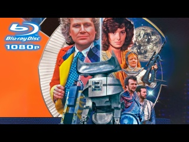
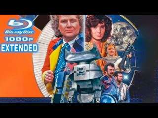
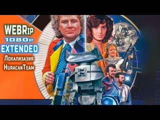
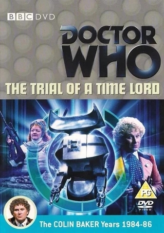
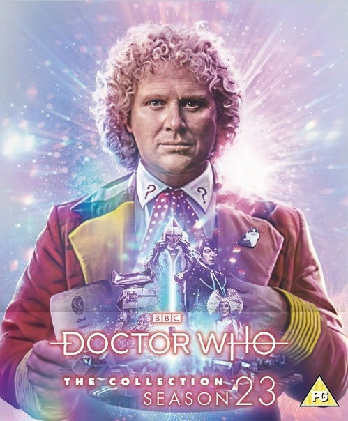
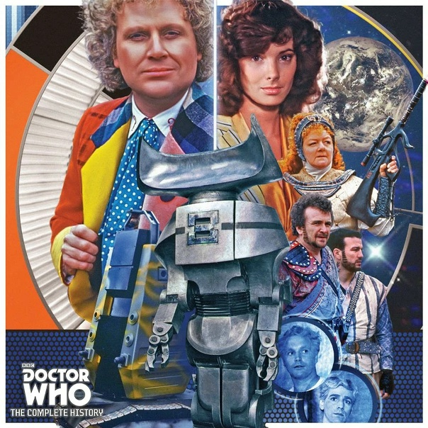
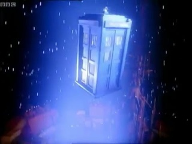

попутчик
Субтитры: Русские и Английские |  |
|---|---|
Субтитры: только Английские |  |
с фанатской локализацией видеоряда (HuracanTeam) Субтитры: только Английские |  |
The Mysterious Planet
Дата выхода: 6-27 сентября 1986
Формат: 4 эпизода по 25 мин.
| попутчик |
ТАРДИС прибывает на планету Равалокс, где цивилизация деградировала до средневековья, а под землёй скрывается оборудование, явно не местного происхождения. Доктор и Пери начинают расследование — но это лишь первая часть большей истории: всё происходящее — показания на суде над Доктором, который ведёт Верховный Совет Повелителей Времени.
Сезон 23 «Суд над Повелителем Времени» — единая история на 14 эпизодов, впервые с давних времён. Структура отсылает к «Военным играм» — прошлому суду над Доктором. Съёмки проходили в пещерах Чеддара и каменоломнях Уэльса, а планета Равалокс — на самом деле Земля будущего, сдвинутая с орбиты.
 VHS - октябрь 1993 |   DVD+Boxset - 29 сентября 2008 |  Blu-ray - 7 октября 2019 * Версия в нашей группе |
|---|

